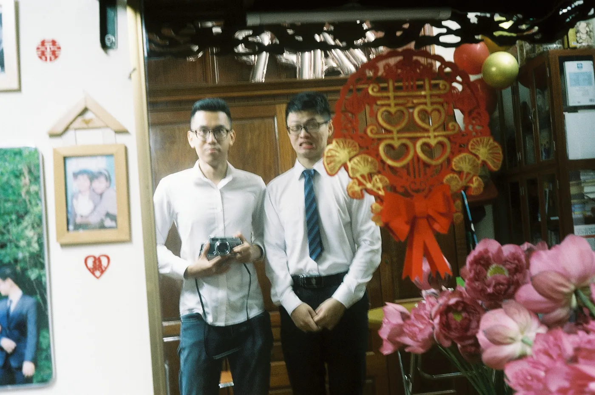
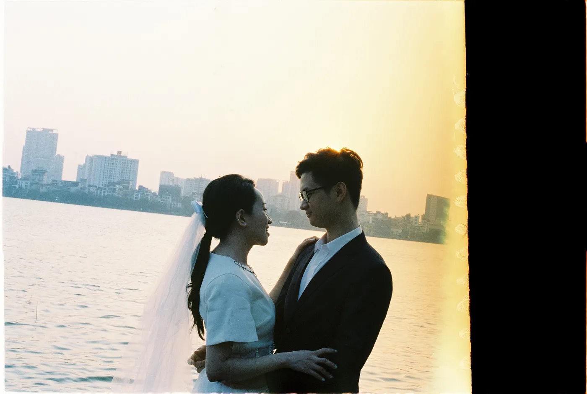
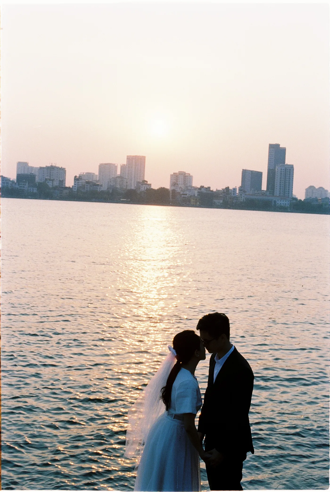
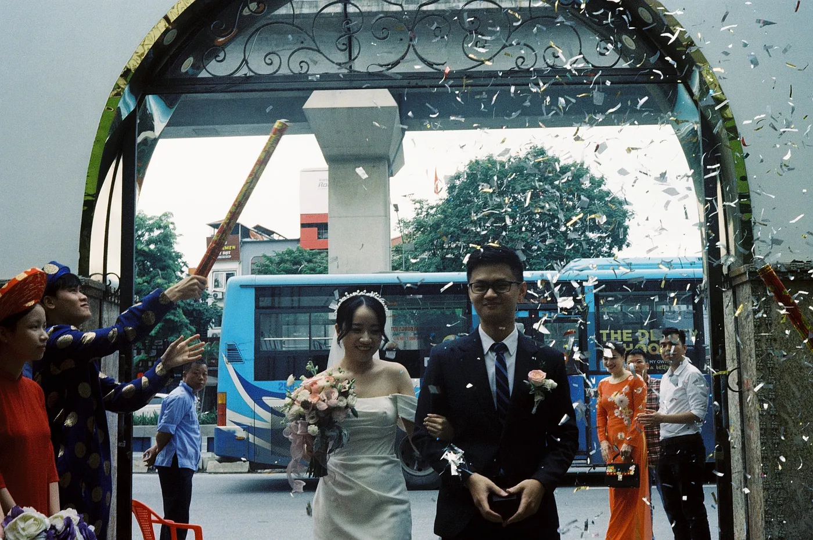
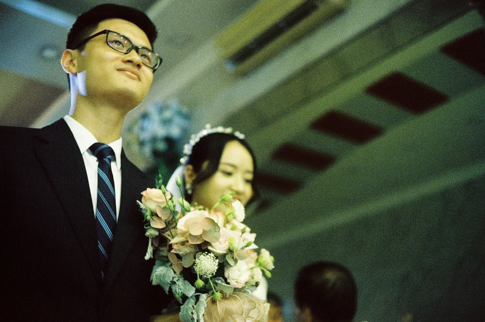

Friendship, Brotherhood, Classmates
By Huy Quang Vũ | Over the course of a human lifespan, 12 years represents a significant duration, not just for a friendship but also for a bond akin to brotherhood. The enduring connection between these two classmates follows this same pattern.
Introduction to the brotherhood
Although I had known this individual since primary school, it wasn't until seventh grade that we finally crossed paths at an English extracurricular course. During this course, it became a source of humor that our teacher consistently mispronounced his name. In the meantime, my classmates teasingly dubbed me the "grade 6's gangster" because I had accidentally attended the wrong class. From that point on, whenever I wanted to tease him, I would affectionately use this nickname.
Following the conclusion of the English course, we didn't see each other for three years. However, at the beginning of tenth grade, by sheer coincidence, we both ended up attending the same high school and being placed in the same class. It was then that I approached him and inquired whether I had finally pronounced his name correctly. In response, he quipped, "You're the grade 6's gangster." That moment marked the inception of a beautiful friendship.
I cannot emphasize enough how high school became the most wonderful period of my life, and this person played a significant role in it. In tenth grade, he showcased his guitar skills to our class, revealing that he had been practicing for three years at that point. One of my favorite songs was "Forever" by Stratovarius, and although he knew how to play it, he never performed it. Consequently, in eleventh grade, I decided to learn to play the guitar myself. He recommended me to his guitar teacher. Initially, he believed I'd only last a few months, but to his surprise, I worked diligently and managed to play an entire song after a year. The guitar became an essential part of my life, bringing out my romantic side and providing me with a sense of calm. I owe him my gratitude for introducing me to such an excellent teacher with whom I studied for another five years.
Furthermore, this friend had a deep passion for poetry and literature, despite being in a science-oriented class. This led to some amusing and peculiar situations. Due to the predominance of male students in our scientific class, he would occasionally playfully intimidate a few of us, myself included, by holding our hands and reciting Alexander Pushkin's "I love you" poem. At first, we were taken aback and tried to pull our hands away. However, we soon realized it was all in good fun, so we memorized the poem by heart. From then on, every time he held our hands, we would recite it along with him. What a comical twist that added to our friendship! To this day, it remains the only poem I can recall by heart.
As we approached our final year of high school, with the pressure of graduation and university entrance exams weighing on us, we were among the few students who diligently completed homework assignments given by our school teacher. We still chuckle when we think about it, as we can't quite fathom why we chose to do our school teacher's homework while our peers turned to their extracurricular course instructors.
Darkest time
Certainly, conflicts were not absent from our relationship. Most of these conflicts arose during our university years. Unlike high school, where we spent each week in the same class with the same people, university life was different for us. We pursued different majors at separate universities, which naturally brought with it distinct perspectives and experiences. The physical distance also played a role in straining our relationship. I've come to believe that when conversations are scarce, it becomes challenging to maintain closeness with the people you know.
Nevertheless, one invaluable lesson I gleaned from that period is that when a friendship is genuinely pure and strong, it will invariably find a way to overcome conflicts and bridge the gaps created by distance. And that's precisely what happened in our case.
His marriage
That friend of mine had confided in me about his girlfriend a year ago. They had been friends for a year and a half prior to that. We had made several plans to introduce me to his girlfriend in person, but various obstacles, such as bad weather and illness, thwarted our attempts. Then, during this past Lunar New Year, he took me by surprise when he announced his intention to marry her, causing me a restless night of sleep. He was about to become her husband, and it was only after Lunar New Year's Eve that I finally had the opportunity to meet his fiancée at his home. It was during our conversations that I realized she was the very woman he was planning to marry.
Before their wedding, when they were preparing for a photobook shoot, I asked if I could step in as their secondary film photographer, and they graciously agreed. However, life threw me a curveball. Just a week before the shoot, I broke my camera and contracted COVID-19. Thankfully, she lent me her film camera, though hers had a viewfinder while mine was a rangefinder. I had only recovered from COVID-19 just two days before the shoot.
During the session, I was incredibly nervous because I wasn't accustomed to her camera. Yet, they placed their trust in me wholeheartedly. I relied on my knowledge of using a viewfinder to take the shots. In the end, their trust was well-placed. While half of the roll turned out unusable due to my initial blunders with shutter speed, the rest were true masterpieces. I initially set the shutter speed too low, resulting in blurry and overexposed photos. But I corrected my mistake by instinctively doubling the shutter speed, and it yielded perfect results.
On their wedding day, I had invested in a new camera equipped with an automatic light meter. The light meter proved to be a wise choice, saving me money on film and allowing me to focus entirely on capturing the moments without the need for meticulous light metering. Consequently, their film wedding photos turned out exceptional. Each of the 36 exposures resulted in a beautiful and lively picture. I had preserved their memories, capturing a purity and imperfection that made their moments truly special. They had hired professional photographers and videographers to document their perfect moments with telephoto lenses and gimbals, while I, with handheld recording and some shaky film photos, embraced imperfections on their behalf.
In the end, I hoped that my efforts helped them fulfill their desire for a memorable wedding. After all, we are close friends, and we aren't in pursuit of perfection. What matters most to us is purity, love, and the essence of our humanity within our brotherhood.
The Future
I eagerly anticipate the future they will build together, knowing that they will always have my support if they ever need it.
From the depths of my heart, I genuinely love you both.
- Huy